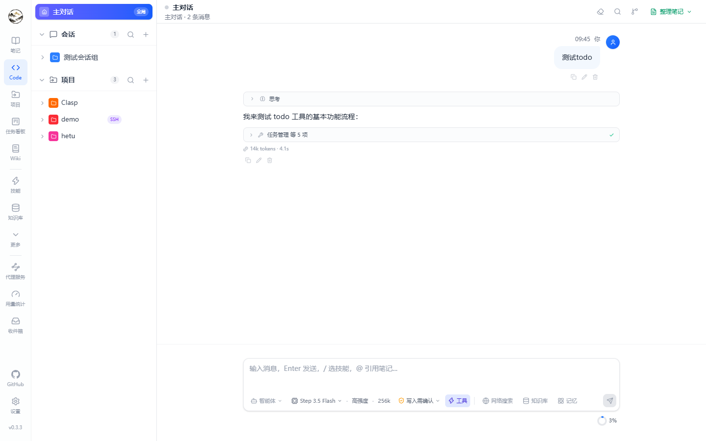

同一份知识底座
笔记、对话、代码改动、记忆与任务写进同一个本地数据库。检索与 Agent 看到的是同一份上下文，不需要跨应用复制粘贴。
Hetu 是一个住在你电脑里的 AI 工作台。Markdown 笔记、Agent 对话与 Code 会话共用一份数据；检索、图谱、Wiki 与记忆，都长在同一处。模型只连你自己配置的供应商。

笔记页负责沉淀，对话负责思考，Code 会话负责动手。它们不是三个 App，而是同一份知识底座的三个入口。
笔记、对话、代码改动、记忆与任务写进同一个本地数据库。检索与 Agent 看到的是同一份上下文，不需要跨应用复制粘贴。
Milkdown 所见即所得与源码视图随时切换；选中文字就能润色、翻译、精简或扩写。版本、分享、回收站与导出都在原处。
笔记文档 →SSE 流式回复、工具调用与审批、五档权限、运行中引导。长任务可以托管，关键动作仍然由你点头。
工作台文档 →为每个任务开独立工作树，在真实仓库里改代码。逐行 Diff、检查点回滚、终端、浏览器、Git 与 PR，一个面板都不少。
Code 文档 →笔记、文件与网页统一分块向量化；知识图谱把实体与关系连起来；Wiki 把仓库变成可读的文档。
知识库文档 →跨会话记住你的偏好与项目背景，按作用域召回；Dream 定期合并、衰减与遗忘，让记忆库保持干净。
记忆文档 →看板任务可以交给 Agent 执行；工作流把多步流程串起来；MCP、技能与智能体让工具面持续长大。所有执行都留下可回看的步骤与产物。
看板与自动化文档 →全部是真实界面截图。切换标签查看笔记、Code、知识图谱、Wiki、记忆与用量；点开图片可以看原尺寸。
不是又一个聊天框，而是一张会生长的网：每一次记录、提问和改动，都会成为下一次工作的上下文。
把笔记、文件、网页和一次对话留在本地。没有账号，没有云端副本，数据目录由你掌控。
分块、向量、实体、关系、Wiki 与记忆自动建立索引，让下一次提问找到上一次的上下文。
Agent 在同一个底座上检索、调用工具、修改仓库、执行任务；每一步都有记录，可回看、可回滚。
桌面版最省事；想改代码就从源码运行。两条路径都有完整文档与数据目录说明。
Windows 与 Linux 安装包。关闭窗口默认留在托盘，后端与后台任务继续运行。
# Windows：Hetu_x.y.z_x64-setup.exe / .msi
# Linux： .AppImage / .deb
#
# 两个独立更新渠道：
# fat = 自带 .NET 10 运行时
# slim = 需系统 .NET 10 运行时需要 .NET SDK 10.0+ 与 Node.js 20+。启动后前端在 5174，接口在 5000。
git clone https://github.com/wosledon/Hetu
cd Hetu
pwsh ./scripts/start.ps1 # Windows
./scripts/start.sh # Linux / macOS每一页都写清楚操作路径、配置项、数据落点与排错。深入实现部分直接对应代码里的循环、压缩与权限判定。